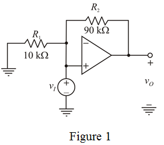
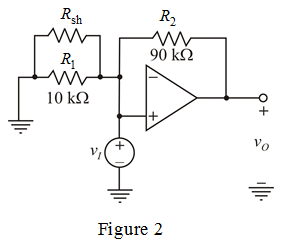

Write the expression for gain of non-inverting op-amp.
…… (1)
Substitute  for
for  in the equation.
in the equation.
Write the expression for gain of non-inverting op-amp.
…… (1)
Substitute for in the equation.
Write the actual closed loop gain of the op-amp (consider open loop gain ).
).
Substitute  for
for  and
and  for
for  in the equation.
in the equation.
Therefore, closed-loop gain of the amplifier by considering open-loop gain is.
Draw the closed loop uncompensated gain circuit.

Consider a shunt resistor  is added in parallel with
is added in parallel with  to get nominal gain
to get nominal gain  .
.
Re-draw the circuit diagram.

Substitute for  ,
,  for
for  ,
,  for and for
for and for  in the equation.
in the equation.
Therefore, the value of shunt resistor to get the nominal gain is .
Consider the open-loop gain of the amplifier is, .
Determine the closed-loop gain of the amplifier.
Substitute  for
for  ,
,  for
for  and
and  for
for in the equation.
in the equation.
Therefore, new closed-loop gain of the amplifier is .
Substitute  for
for  ,
,  for
for  , for and
, for and  for
for in the equation.
in the equation.
Therefore, the new closed-loop gain of the amplifier with compensated resistor is.